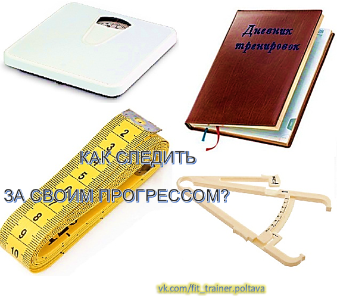

Многие люди тренируются в тренажерном зале, и не следят за своим прогрессом. Но это важно делать, чтобы знать работают ли на вас тренировки и питание, или нет. Наблюдение за своим прогрессом также важно из-за того, что это будет вас мотивировать и направлять по правильному пути...
Многие люди тренируются в тренажерном зале, и не следят за своим прогрессом. Но это важно делать, чтобы знать работают ли на вас тренировки и питание, или нет. Наблюдение за своим прогрессом также важно из-за того, что это будет вас мотивировать и направлять по правильному пути. Например, когда вы видите, что меняетесь в лучшую сторону, это вам дает толчок двигаться дальше и достигать больших высот.
В этой статье я вам расскажу, как следить за своим прогрессом в плане формы тела и тренировок. Также вы узнаете, как можно без проблем измерить процент своего подкожного жира.
И начнём мы из самого простого. Это замеры объёмов рулеткой.
Рулетка очень полезный и недорогой предмет с помощью которого вы сможете мерить окружность своих рук, груди, талии, ног, а также других частей тела. Очень важно делать замеры, если вы хотите например, увеличить руки или грудь, а может вы просто хотите уменьшить талию. Ведь чтоб понять меняетесь вы или нет с помощью диеты и тренировок нужно использовать рулетку.
Если вы хотите набрать или сбросить вес, вам не помешают веса, с помощью которых вы можете следить за изменением своего веса. Очень необходимо взвешиваться раз в неделю для того чтобы смотреть как работает на вас питание и тренировки, и в зависимости от результата менять их.
Существует много способов измерить уровень своего подкожного жира от разных формул до специальных весов. Но лично я считаю самым простым и более точным способом измерения жира - калипер. Калипер - это прибор похожий на щипцы, где есть шкала с миллиметровыми отметками. Вы просто оттягиваете кожу и зажимаете её калипером, а дальше смотрите на шкалу. В зависимости от того сколько миллиметров ваша жировая прослойка вы можете узнать процентное количество жира в вашем организме, если посмотрите на соответствующую таблицу, где нужно соотнести показатели на калипере и ваш возраст. Есть таблицы где нужно померить только одну точку, на боку внизу живота. Также есть таблицы в которых нужно делать замеры в 4, или более точках на теле и додавать их. Дальше нужно искать в таблице это число. Например можно измерять жир на: бицепсе, трицепсе, животе и лопатке. Чем больше точек вы измеряете, тем точнее будут ваши расчеты в плане процента жира на теле.
Очень важным инструментом для слежения за своим прогрессом в плане увеличения нагрузки, является тренировочный дневник. Это может быть обычная тетрадка в клеточку, где вы будете записывать свои результаты в тренировках. Например вы пишете упражнение, дальше вес с которым работали, количество подходов и повторений. Также можно записывать время отдыха между подходами.
Как пользоваться тренировочным дневником?
Например сейчас у вас тренировка груди. И первое упражнение которое вы делаете, это жим штанги на наклонной скамье (30 градусов наклон). Вы сделали 2 разминочных подхода и начали делать рабочие. Вы пожали вес 80 кг на 10 повторений, дальше поставили вес 90 кг и сделали 2 подхода по 6 повторений, и последний - 80 кг на 8 повторений и закончили упражнение. Отдых между подходами у вас был 2 минуты.
В дневник это можно записать так:
1) жим штанги лежа на наклонной скамье 30 гр. - 80 кг х 10 + 90 кг 2х6 + 80 кг х 8 (отдых - 2 мин.)
На следующей тренировке грудных вам необходимо постараться сделать больше работы с сохранением время отдыха - 2 мин. и сохранением, или увеличением количества работы в других упражнениях. Вам можно увеличить вес на штанге или увеличить количество повторений в подходах.
Например можно сделать так:
1) жим шт. лежа на наклонной скамье 30 гр. - 80 кг х 10 + 92,5 кг 2х6 + 80 кг х 8 (отдых - 2мин.)
Как видите мы увеличили вес на 2,5 кг у 2 подходах, и нагрузка существенно увеличилась.
Второй вариант прогрессии такой:
2) жим штанги лежа на наклонной скамье 30 гр. - 80 кг х 10 + 90 кг 2х7 + 80 кг х 8 (отдых - 2 мин.)
Здесь мы увеличили количество повторений с 6 к 7 у двух подходах.
Как видите это делать не так уж и сложно, но это поможет вам намного быстрее достигнуть нужного результата.
Заключение:
Очень важно следить за прогрессией нагрузки на тренировках. Ведь если у ваших тренировках не будет ничего меняться, вы тоже не будете меняться, а будете стоять на месте. Если у вас есть цель, и вы очень хотите её достичь, нужно отслеживать свой прогресс с помощью тех методов, которые я описал выше. Тогда вы будете знать, двигаетесь ли вы в верном направлении, или стоите на месте. Желаю вам удачи и успехов на пути к вашей заветной цели! 😊